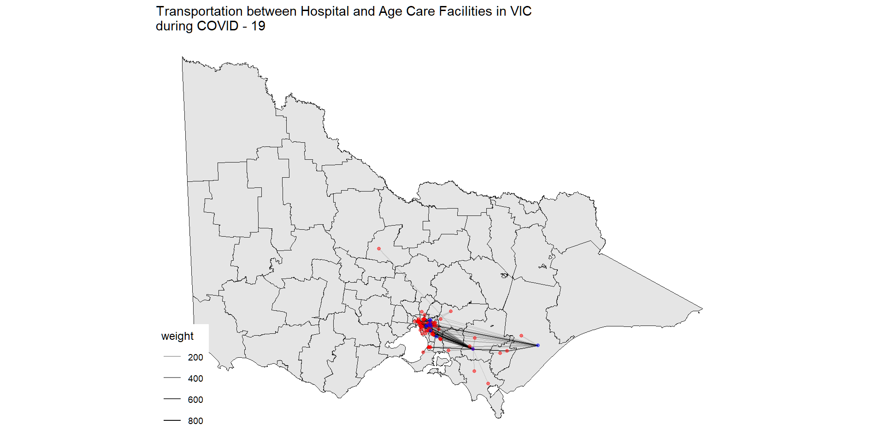
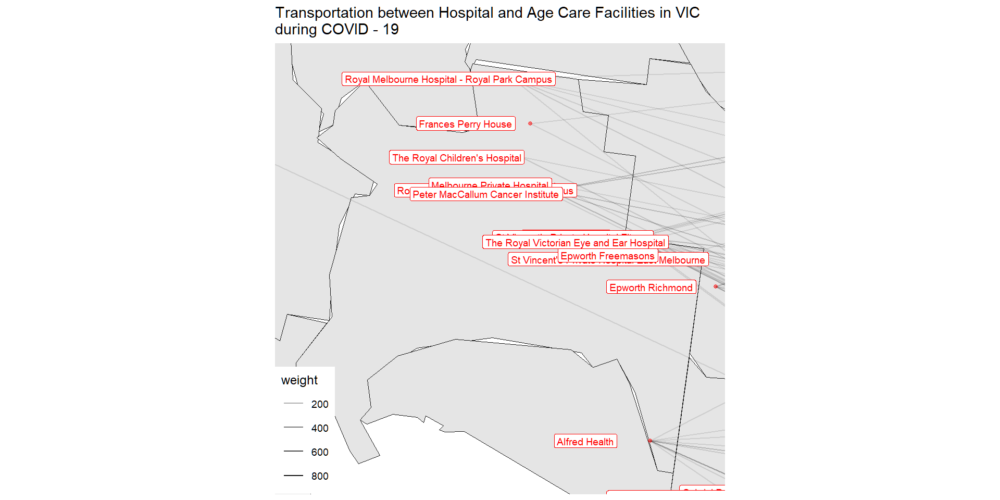

MAPYCUS MAXIMUS
When context meet detail
Thanh Cuong (Alex) Nguyen
2025-10-10
MAPYCUS MAXIMUS
A Focus–Glue–Context Framework for Geospatial Fisheye Transformations
Alex Nguyen
Master of Business Analytics, Monash University
“A cartographic lens to see both detail and context — at once.”
The Problem: Seeing Everything at Once
- Static maps show global structure but hide local detail.
- Zooming in shows detail, but you lose context.
- Scrolling & panning? Still fragmented.
The Problem: Seeing Everything at Once
Traditional Map
Zoom-in Map

HOWEVER, WHAT HAPPENED IF YOU FOCUS ZONE IS A DENSE METROPOLITAN AREA?
WILL THE PREVIOUS APPROACH STILL WORK?
Traditional Map
Show code
ggplot() +
geom_sf(data = vic_fish, fill = NA, color = "grey80") +
geom_sf(data = conn_small, aes(alpha = weight), color = "black") +
geom_sf(data = hosp_points, color = "red", size = 1, alpha = 0.5) +
geom_sf(data = racf_points, color = "blue", size = 1, alpha = 0.5) +
labs(title = "Transportation between Hospital and Age Care Facilities in VIC
during COVID - 19") +
theme_map()
Zoom-in Map
Show code
center_bbox <- st_transform(center_bbox, st_crs(vic_fish))
ggplot() +
geom_sf(data = vic_fish, fill = NA, color = "grey") +
geom_sf(data = conn_small, aes(alpha = weight), color = "black") +
geom_sf(data = hosp_points, color = "red", size = 1, alpha = 0.5) +
geom_sf(data = racf_points, color = "blue", size = 1, alpha = 0.5) +
coord_sf(xlim = center_bbox[c("xmin", "xmax")], ylim = center_bbox[c("ymin", "ymax")]) +
labs(title = "Transportation between Hospital and Age Care Facilities in VIC
during COVID - 19") +
theme_map()
MAPYCUS MAXIMUS TO THE RESCUE
Show code
library(purrr)
zoom_seq <- seq(1, 20, by = 0.1)
center_pt_proj <- melbourne
fisheye_frames <- map_dfr(zoom_seq, function(z) {
vic_fish <- sf_fisheye(vic_fish, center = center_pt_proj,
r_in = 0.34, r_out = 0.5, zoom_factor = z)
attr(st_geometry(conn_small), "bbox") <- attr(st_geometry(vic_fish), "bbox")
attr(st_geometry(hosp_points), "bbox") <- attr(st_geometry(vic_fish), "bbox")
attr(st_geometry(racf_points), "bbox") <- attr(st_geometry(vic_fish), "bbox")
conn_fish <- sf_fisheye(conn_small, center = center_pt_proj,
r_in = 1.07, r_out = 2.1, zoom_factor = z)
hosp_points <- sf_fisheye(hosp_points, center = center_pt_proj,
r_in = 1.18, r_out = 2.1, zoom_factor = z)
racf_points <- sf_fisheye(racf_points, center = center_pt_proj,
r_in = 1.23, r_out = 2.5, zoom_factor = z)
tibble(
zoom_factor = z,
vic = list(vic_fish),
conn = list(conn_fish),
hosp = list(hosp_points),
racf = list(racf_points)
)
})
fish_long <- map_dfr(1:nrow(fisheye_frames), function(i) {
z <- fisheye_frames$zoom_factor[i]
bind_rows(
fisheye_frames$vic[[i]] %>% mutate(type = "vic", zoom_factor = z),
fisheye_frames$conn[[i]] %>% mutate(type = "conn", zoom_factor = z),
fisheye_frames$hosp[[i]] %>% mutate(type = "hosp", zoom_factor = z),
fisheye_frames$racf[[i]] %>% mutate(type = "racf", zoom_factor = z)
)
})
library(gganimate)
library(ggplot2)
p <- ggplot() +
# VIC map Polygon
geom_sf(data = subset(fish_long, type == "vic"),
fill = NA, color = "grey30") +
# Connections
geom_sf(data = subset(fish_long, type == "conn"),
aes(alpha = weight), color = "black") +
# Hospitals
geom_sf(data = subset(fish_long, type == "hosp"),
color = "red", size = 1, alpha = 0.5) +
# Age Care Facilities
geom_sf(data = subset(fish_long, type == "racf"),
color = "blue", size = 1, alpha = 0.5) +
#geom_sf_label(data = subset(fish_long, type == "hosp"),
#aes(label = hosp_name), color = "red", size = 2.5, nudge_y = 2000) +
#geom_sf_label(data = subset(fish_long, type == "racf"),
#aes(label = racf_name), color = "blue", size = 2.5, nudge_y = -2000) +
coord_sf(crs = st_crs(fish_long)) +
labs(title = "Fisheye Zoom: {current_frame}×") +
theme_minimal(base_size = 14) +
theme(legend.position = "none") +
transition_manual(zoom_factor)
anim <- animate(
p,
fps = 25, # 25 fps divides 100 evenly
duration = 8, # seconds total
width = 800,
height = 600,
res = 150
)
anim_save("fisheye_zoom_gganimate.gif", animation = anim)HOW DOES IT WORK?
The transformation operates in polar coordinates:
\[ \begin{aligned} r &= \sqrt{(x - c_x)^2 + (y - c_y)^2} \\ \theta &= \arctan2(y - c_y, x - c_x) \end{aligned} \]
Then applies zone-specific radial mapping:
\[ r' = \begin{cases} \min(r \times z, r_{in}) & \text{if } r \leq r_{in} \text{ (focus)} \\ f_{compress}(r, s) & \text{if } r_{in} < r \leq r_{out} \text{ (glue)} \\ r & \text{if } r > r_{out} \text{ (context)} \end{cases} \]
where \(z\) = zoom_factor, \(s\) = squeeze_factor
Core Implementation: fisheye_fgc()
fisheye_fgc <- function(coords, cx = 0, cy = 0,
r_in = 0.34, r_out = 0.5,
zoom_factor = 1.5,
squeeze_factor = 0.3,
method = "expand",
revolution = 0.0) {
# Convert to polar coordinates
dx <- coords[, 1] - cx
dy <- coords[, 2] - cy
radius <- sqrt(dx^2 + dy^2)
angle <- atan2(dy, dx)
# Classify into zones
zone <- ifelse(radius <= r_in, "focus",
ifelse(radius <= r_out, "glue", "context"))
# Apply transformations...
# Returns: matrix with x_new, y_new
}Geospatial Integration: sf_fisheye()
Handles real-world geodata with automatic CRS management:
sf_fisheye <- function(sf_obj,
center = NULL, # flexible: lon/lat, x/y, or sf object
center_crs = NULL, # e.g., "EPSG:4326"
r_in = 0.34, r_out = 0.5,
zoom_factor = 1.5,
squeeze_factor = 0.35,
target_crs = NULL, # auto-selects if NULL
preserve_aspect = TRUE) {
# Auto CRS selection for Victoria:
# EPSG:7855 (GDA2020 / MGA Zone 55)
# Otherwise: UTM based on centroid
}Automatic CRS Handling
Smart projection selection:
Victoria region (140-150°E, 30-40°S)
→ EPSG:7855 (GDA2020 / MGA55)Other lon/lat
→ Auto-calculate UTM zone
→ EPSG:326## (N) or 327## (S)Already projected
→ Uses existing CRSReturns in original CRS
→ Seamless workflow
Flexible Center Specification
The center parameter accepts multiple formats:
Geographic coordinates with
center_crsProjected map units (meters)
Normalized coordinates [-1, 1]
Any sf/sfc geometry (centroid computed)
Transformation Methods
method = "expand"
Bidirectional expansion in glue zone:
- Inner half → expands toward
r_in - Outer half → expands toward
r_out - Creates balanced transition
Geometry Support via st_transform_custom()
Handles all standard sf geometry types:
| Type | Support | Notes |
|---|---|---|
| POINT | ✅ | Direct coordinate transform |
| LINESTRING | ✅ | Preserves vertex order |
| POLYGON | ✅ | Auto-closes rings |
| MULTIPOLYGON | ✅ | Handles multiple parts & holes |
Key Feature
Polygon rings are automatically re-closed after transformation to ensure first vertex = last vertex.
Example: Simple Grid Transform
library(mapycusmaximus)
# Create test grid
grid <- create_test_grid(range = c(-1, 1), spacing = 0.1)
# Apply fisheye
transformed <- fisheye_fgc(
grid,
cx = 0, cy = 0,
r_in = 0.34,
r_out = 0.5,
zoom_factor = 1.5,
squeeze_factor = 0.35
)
# Visualize
plot_fisheye_fgc(grid, transformed, r_in = 0.34, r_out = 0.5)Use Cases & Applications
| Domain | Application | Benefit |
|---|---|---|
| Urban Planning | CBD-focused regional maps | Detail downtown + suburban context |
| Transportation | Route & congestion analysis | Zoom bottlenecks + preserve network |
| Public Health | Disease outbreak mapping | Magnify hotspots + regional spread |
| Real Estate | Property visualization | Highlight listings + neighborhood |
| Emergency | Incident response | Detail at scene + surrounding resources |
| Data Viz | Network graphs | Focus on central nodes + topology |
Visualization Helpers
Utility functions for testing and visualization:
# Create regular grid
grid <- create_test_grid(range = c(-1, 1), spacing = 0.1)
# Classify points by zone
zones <- classify_zones(grid, cx = 0, cy = 0,
r_in = 0.34, r_out = 0.5)
# Side-by-side comparison plot
plot_fisheye_fgc(original_coords, transformed_coords,
cx = 0, cy = 0, r_in = 0.34, r_out = 0.5)Tip
All visualization functions use ggplot2 for easy customization
Advanced: Preserve Aspect Ratio
Control how normalization handles rectangular bounding boxes:
preserve_aspect = TRUE
Uses uniform scale: \[s = \max(s_x, s_y)\]
- Square normalization space
- Maintains shape proportions
- Default behavior
preserve_aspect = FALSE
Independent axis scaling: \[s_x, s_y \text{ separately}\]
- May stretch shapes
- Fills bounding box
- Use with caution
Future Enhancements
Multi-focal fisheye
Blend multiple focus regions with weighted transitionsTemporal fisheye
Animate transformations over time-series data3D extensions
Spherical and hemispherical projectionsAI-driven centers
Automatic focus detection from data densityInteractive dashboards
Shiny apps with real-time parameter adjustmentWeb mapping
Integration with leaflet/mapview
Installation & Getting Started
# Install from GitHub
devtools::install_github("Alex-Nguyen-VN/mapycusmaximus")
# Load package
library(mapycusmaximus)
library(sf)
# Quick example
data <- st_read("your_data.shp")
result <- sf_fisheye(
data,
center = c(lon, lat),
center_crs = "EPSG:4326",
r_in = 0.34,
r_out = 0.5,
zoom_factor = 1.5
)
# Plot
ggplot() + geom_sf(data = result)Resources & Documentation
📚 Package Links
- GitHub: Alex-Nguyen-VN/mapycusmaximus
- Documentation: README & vignettes
- Issues: Bug reports & feature requests
📖 Key Functions
fisheye_fgc()- Core transformationsf_fisheye()- Geospatial wrapperst_transform_custom()- Geometry handlerplot_fisheye_fgc()- Visualization
Contributions Welcome!
Open source project seeking collaborators for enhancements and use cases
Thank You!
Transform Your Perspective — One Radius at a Time
Alex Nguyen
GitHub: Alex-Nguyen-VN
devtools::install_github("Alex-Nguyen-VN/mapycusmaximus")
“A cartographic lens to see both detail and context — at once”